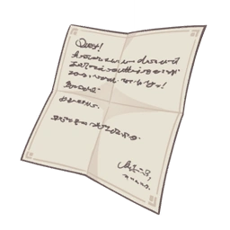

Mondstadt · Books & Literature
Draft Hilichurl Ballads
Ella Musk’s three Hilichurlian poem drafts belong to her language research; the book record presents them as experiments, not authoritative samples of hilichurl poetry.

What the collection contains
Draft Hilichurl Ballads is cataloged as a three-volume Mondstadt book collection. Its named pieces are the Recital Draft, Narrative Draft, and Lyrical Draft. The in-game descriptions attribute the poems to Ella Musk and present them as unfinished experiments in Hilichurlian.
The catalog record offers Volume 1 after the Poetry Exchange commission and lists Volumes 2 and 3 as unavailable. The archive gives those later drafts titles, but their absence means players cannot treat them as readable poems or infer their full contents from the titles alone.
Ella Musk’s language research
Ella studies Hilichurlian and wants to test her understanding through direct conversation. Poetry Exchange puts that research into practice: she prepares lines for the Traveler to recite to a group of hilichurls, then asks how the exchange went. A successful version of the commission is associated with the achievement Yo dala?.
That quest context makes the book’s authorial voice clear. These are poems created by a human learner who is testing language and trying to communicate, not a collection independently authored or edited by hilichurls. The descriptions’ playful suggestion that something sounds off fits Ella’s uncertain expertise; it is not proof that the language itself is incoherent.
The available Recital Draft
Volume 1 is titled Recital Draft, and its description frames it as a poem about friendship. It also says Ella considers the piece a work of many hands. The game does not identify those supposed contributors, so the phrase should not be expanded into a claim that a named Hilichurl wrote or co-authored it.
The archive’s short item text and the commission together establish the poem as part of Ella’s learning process. This guide does not reproduce the verse: its lore value lies in its provenance, its tentative translation, and the way the commission tests whether communication can succeed.
What this source can and cannot establish
The game establishes that Ella wrote three titled drafts, that the first is connected to Poetry Exchange, and that the collection presents her as experimenting with Hilichurlian. The commission confirms the practical setting in which she tests her notes and seeks feedback.
The obtainable poem is not a transparent transcript of Hilichurl culture, and the unavailable volumes provide no readable evidence yet. Claims about Hilichurl poetic tradition, the identities of the supposed contributors, or the unwritten poems’ meanings would go beyond what these records show.
This is an original CoreGG reading guide, not an official HoYoverse article or a reproduction of the game text. Source links below identify the records used so you can check the original context.
Sources & references
Check these sources for the original game text and reference trail.